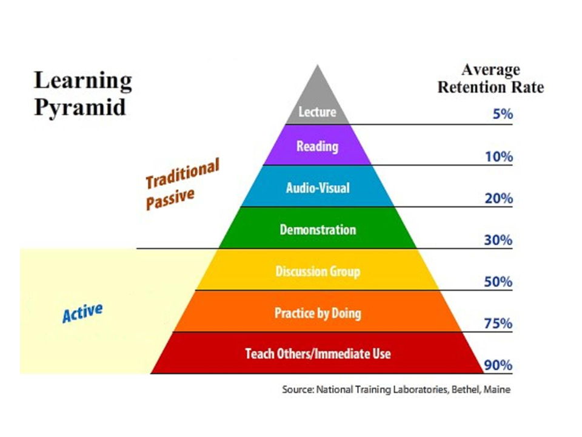

THE CONCEPT
As I was preparing this website (by watching online tutorials, as you know, I'm not a pro-website creator or anything alike), I stumbled upon a brief yet brilliant quotation, "we teach to learn." While I can hardly remember where that came from or who said that, I knew about this, but never really applied it to myself. This is the so-called "Teaching by Learning" where one's understanding of something is tested and improved by teaching what he/she knows using only the simplest of words he/she can come up with.
And by that, you may already know that I created My Polish Notes so that I can force myself to show (teach) something while learning it, reviewing what I put in here, and by doing so, establish my knowledge of the subject, needless to mention, Poland.
In other words, this is simply a blog site of (redundantly) my personal thoughts and impressions about Poland. "Teaching by learning (German:Lernen durch Lehren, LdL)" is a studying technique to deeply understand a concept, or anything one wants to learn. This fits right to what the learning pyramid tells us, that there is a 90% retention rate when one teaches others of what he/she wants to learn.
Jean-Pol Martin, a language teacher in German schools, developed this efficient way to learn things. If you want to read more about
this, click on this link.
At the time of writing, what I know about Poland is as much as what a language enthusiast does. Not too little, not too much either, compared to a native, of course. And this is my way of addressing that small problem of mine, because I certainly would love to go to Poland not later than 10 years from now. In a way, I am 'forcing myself to voluntarily' learn more about Poland. I don't know if it makes sense, but anyway, this is what I do, and it works. Speaking of the culture, but the language, I'm getting there. I believe that learning a country's culture will eventually help you understand the language.